Practice Mock Exam
Question 1
[1071380]
Which of the following institutions would be most concerned with short-term liabilities?
A
Immature pension fund
B
General insurer
C
Endowment fund
D
Life assurance company
The correct answer is: B - General insurer
Explanation
A general insurer will have short-term liabilities, such as motor and house insurance. Typically, the other institutions will face long-term liabilities.Question 2
[1066872]
Which of the following is not a risk measure used by a pension fund manager who has implemented an LDI strategy?
A
Plan surplus
B
Volatility of surplus
C
Surplus requirements
D
Surplus tracking error
The correct answer is: C - Surplus requirements
Explanation
LDIs focus on the plan surplus (assets minus liabilities) and the volatility of this surplus. Surplus tracking error (the shortfall between actual and target surplus). A more sophisticated approach is to consider the volatility of this surplus and use it to assess the likelihood (or probability) of the surplus being a negative number at some time in the future.Question 3
[1001265]
Which of the following is true regarding index-linked gilts?
A
Only the coupon is index-linked
B
Only the redemption value is index-linked
C
Both the coupon and the redemption value are index-linked
D
Neither the coupon or the redemption value are index-linked
The correct answer is: C - Both the coupon and the redemption value are index-linked
Explanation
Both the coupon and the redemption value are index-linked to movements in the retail price index.Question 4
[1001290]
Which of the following is not a function of the DMO?
A
Issue of gilts
B
Issue of Treasury bills
C
Settlement of gilts
D
Approval of gilt-edged market makers
The correct answer is: C - Settlement of gilts
Explanation
CREST is the settlement agency for gilts.Question 5
[1001393]
MR plc has 20 million 10p ordinary shares in issue. The net dividend is 4.17p per share, and the dividend yield is 4%. What is the market price per share?
You should answer this question by typing the correct numbers in the following format without symbols: 0.00
The correct answer is: 1.04 - 1.04
Explanation
Dividend yield (4%) is 4.17p divided by the share price Therefore share price is £1.04.Question 6
[1001398]
The nominal value of a share is a £1.00. The earnings per share is 15p. The dividend per share is 5p and the current market price is £1.60. What is the dividend cover?
You should answer this question by typing the correct numbers in the following format without symbols: 0.0
The correct answer is: 3.0 - 3.0
Explanation
Dividend cover = EPS / DPS = 15p / 5p = 3 times.Question 7
[1001921]
Which of the following is an incorrect statement when describing modified duration?
A
All other things being equal, longer maturity bonds have a higher modified duration than shorter maturity bonds
B
All other things being equal, high-coupon bonds have a lower modified duration than low-coupon bonds
C
All other things being equal, low-yielding bonds have a higher modified duration than high-yielding bonds
D
All other things being equal, high-yielding bonds have a higher modified duration than low-yielding bonds
The correct answer is: D - All other things being equal, high-yielding bonds have a higher modified duration than low-yielding bonds
Explanation
Modified duration is a measure of a bond's volatility to interest rate movements. Modified duration is highest for bonds with: - Low coupons - Long maturity - Low yieldsQuestion 8
[1006147]
What is the meaning of the term 'open-ended' when referring to funds?
A
No winding-up date set for the fund on which the assets will be liquidated and investors paid off
B
The fund can expand and contract as new units/shares are created to meet demand, or units/shares are cancelled on redemption by investors
C
All units and shares are subject to a single pricing regime where units/shares are bought and sold at the same price
D
There are no investment restrictions on the fund manager as long as he complies with the trust deed
The correct answer is: B - The fund can expand and contract as new units/shares are created to meet demand, or units/shares are cancelled on redemption by investors
Explanation
The number of units/shares can be varied according to demand.Question 9
[1007839]
A scrip issue would be issued for all of the following reasons, EXCEPT:
A
To reduce a company's debts
B
To increase the liquidity of a share
C
To decrease the price of a share
D
To bring the share capital in line with current business needs
The correct answer is: A - To reduce a company's debts
Explanation
A rights issue might be used to reduce a company's debts. A scrip issue is a free issue of shares to reduce a share's price, thereby increasing its liquidity. It also has the effect of tidying up the balance sheet.Question 10
[1012658]
Which of the following are classifications of hedge fund?
A
I, II, and III
B
I, II, III, and IV
C
III only
D
I, II, and IV
The correct answer is: B - I, II, III, and IV
Explanation
All of these represent general investment objectives of hedge funds.Question 11
[1012662]
In bivariate regression which of the following is true if the independent and dependent variables are negatively correlated?
A
The intersect on the y-axis will be positive
B
The intersect on the y-axis will be negative
C
The correlation coefficient will be 1
D
The slope of the line will be negative
The correct answer is: D - The slope of the line will be negative
Explanation
It is not possible to ascertain whether the intercept will be positive or negative from the information given. However, the gradient of the line (coefficient b) will always be negative.Question 12
[1012680]
You have £1,000 in your portfolio at the beginning of the first year and your year 1 return was 15%. You put in another £150 at the end of the first year. If your time weighted rate of return was 22% over two years, how much is your portfolio worth at the end of year 2?
A
£1370
B
£1,488
C
£1,380
D
£1,680
The correct answer is: C - £1,380
Explanation
Knowing that the TWRR is 22% and year 1 return is 15%, we can calculate the year 2 return by dividing 1.22 with 1.15, and subtracting 1. This gives us approximately 6.09%. At the end of the first year, we had £1,300 in our portfolio [ £1000X(1.15) plus £150 we put in). £1,300 grew at 6.09%, which gives us £1,380.Question 13
[1012681]
A portfolio has covaried with the market exactly over a substantial period of time. In considering CAPM, which of the following would be expected?
A
The portfolio has a beta of -1
B
The portfolio will have the same expected return as the market
C
The portfolio will have a lower expected return than the market
D
The portfolio moves inversely to market
The correct answer is: B - The portfolio will have the same expected return as the market
Explanation
If the portfolio moves in the same way as the market, it would have a beta of 1, indicating expected risk and return in line with the market.Question 14
[1012691]
Andy Nyman, a research analyst, collects monthly share price data for a company. How can this data be best categorised?
A
Cross-sectional
B
Continuous
C
Discrete
D
Categorical
The correct answer is: C - Discrete
Explanation
Since share prices can move up or down only by a tick at a time, they are discrete.Question 15
[1012704]
Which of the following statements about hedge funds is INCORRECT?
A
Most investors are high net worth individuals and institutional
B
They cannot be generally marketed to the public
C
The managers are usually regulated by the FCA
D
Both the fund and the managers are regulated by the FCA
The correct answer is: D - Both the fund and the managers are regulated by the FCA
Explanation
The managers of hedge funds are usually authorised firms and are thus regulated by the FCA. The funds themselves are usually offshore entities and are not regulated by the FCA.Question 16
[1012705]
Which of the following would be most similar to the liabilities faced by an insurance company selling fixed annuities?
A
Ordinary shares
B
Floating rate notes
C
Gilts
D
Property
The correct answer is: C - Gilts
Explanation
Annuities will terminate after the beneficiary passes away and they are fixed in amount. Gilts pay fixed coupons, which will terminate at maturity also.Question 17
[1012709]
Which of the following would not result in a change in aggregate demand?
A
A change in investment
B
A change in the marginal propensity to consume
C
A change in autonomous expenditure
D
Measuring the change in the money supply
The correct answer is: D - Measuring the change in the money supply
Explanation
Aggregate demand is consumption plus investment. Consumption may be calculated using the consumption function: C = a + bY , where C is consumption, a is autonomous expenditure, b is the marginal propensity to consume and Y is disposable income. Answers A, B, and C all in some way affect aggregate demand, but measuring the money supply will not.Question 18
[1012712]
An immunisation portfolio strategy is which of the following?
A
Choosing a bond portfolio with the same duration as the liability it is intended to meet
B
Choosing a portfolio which is perfectly hedged by exposure to derivatives
C
Attempting to anticipate interest rate changes and choosing a portfolio to maximise the impact of these changes
D
Attempting to identify the under priced bonds on the market and lock into the potential for gain
The correct answer is: A - Choosing a bond portfolio with the same duration as the liability it is intended to meet
Explanation
An immunisation strategy aims to protect the fund from changes in interest rates.Question 19
[1012716]
You are given Rp and Rf and want to calculate the Sharpe measure - what do you require?
A
Standard deviation of the portfolio
B
Return on the benchmark
C
Beta of the portfolio
D
Standard deviation of the market
The correct answer is: A - Standard deviation of the portfolio
Explanation
The Sharpe measure assumes a non-diversified portfolio. The measure therefore looks at the TOTAL RISK of the portfolio, i.e. its standard deviation.Question 20
[1012720]
An investor buys shares in a US company at $25. The foreign exchange rate for the transaction is £1 = $1.50. A year later the shares are trading at $30 and sterling has appreciated against the dollar by 5%. What is the percentage return, in sterling terms, achieved by the investment?
You should answer this question by typing the correct numbers in the following format without any symbols: 00.0
The correct answer is: 14.3 - 14.3
Explanation
At the beginning of the year the investor pays £16.67 for the shares. This is calculated by: $25 / $1.50 = £16.67 Sterling appreciates over the year from $1.50 to $1.575, i.e. 5% (1.50 x 0.05 = 0.075). By this time the shares have also increased in value to $30. At the new sterling rate of $1.575, the shares have a sterling value of: $30 / $1.575 = £19.05. From the sterling perspective then, the shares rose from £16.67 to £19.05, an increase of £2.38. This is a return of 14.277% on the original investment of £16.67: £2.38 / £16.67 = 0.14277 or 14.3%Question 21
[1012721]
Which of the following are paid first in the event of a liquidation?
A
Debentures
B
Preference shares
C
Loan stock
D
Trade creditors
The correct answer is: A - Debentures
Explanation
Debentures are secured debt securities that rank before loan stock (unsecured), trade creditors (preferred creditors) and, lastly, preference shareholders.Question 22
[1012729]
Alaska Plc had a trading profit last year of £10m. Over the period stocks increased by £0.5m, creditors decreased by £1.2m and debtors rose by £0.5m. Depreciation for the year was £0.4m. What was Alaska's net cash flow from operating activities?
You should answer this question by typing the correct numbers in millions in the following format without any symbols: 0.0
The correct answer is: 8.2 - 8.2
Explanation
Net cash flow from operating activities = Trading profit + Depreciation - Increase in stock - Increase in debtors - Decrease in creditors Therefore: Net cash flow from operating activities = £10m + £0.4m - £0.5m - £0.5m - £1.2m = £8.2mQuestion 23
[1012730]
The £/$ spot rate is $1.16, with a forward discount of 2.4c. The UK interest rate is 7%. What is the implied US interest rate?
You should answer this question by typing the correct numbers in the following format without any symbols: 0.0
The correct answer is: 9.2 - 9.2
Explanation
This is solved using the Interest Rate Parity method: The forward rate is $1.16 + 2.4c (0.024) = $1.184 1.184 = 1.16 x 1 + r variable/ 1.07 (r base) or 1.184/1.16 x 1.07 (UK rates) = 1 + US rates = 1.092 (or 9.2%)Question 24
[1012731]
Who can issue CDs in the UK?
A
Banks and corporations with an AAA (or Aaa) credit rating
B
Any bank (or building society) with a UK banking licence
C
Any bank with a UK bank licence and an AAA (or Aaa) credit rating
D
Any bank with an AAA (or Aaa) credit rating
The correct answer is: B - Any bank (or building society) with a UK banking licence
Explanation
In the UK, only those institutions with a UK banking licence can issue CDs.Question 25
[1012732]
If the investor's rate of return is 8%, and a 10 year £5,000 annuity is required, how much will the annuity cost?
You should answer this question by typing the correct numbers in the following format without symbols: 00,000
The correct answer is: 33,550 - 33,550
Explanation
Use the formula for present valuing an annuity as follows;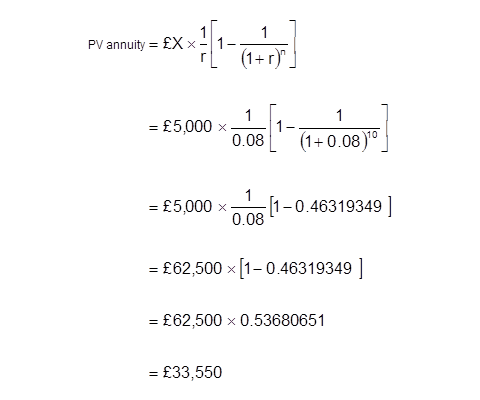
Question 26
[1012734]
If the interest rate is 5% and the purchaser of an annuity requires a payment of £6,000 per annum at the end of each of the next five years, what is the price of the annuity?
You should answer this question by typing the correct numbers in the following format without any symbols: 00,000.00
The correct answer is: 25,976.86 - 25,976.86
Explanation
Use the annuity present valuing formula: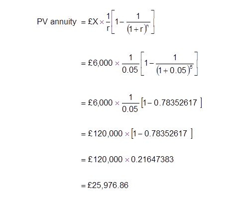
Question 27
[1012737]
What is a close company?
A
A private company limited by guarantee
B
A company which is more than 50% owned by another
C
An company which is more than 20% owned by another
D
A company under the control of its directors, or five or fewer persons
The correct answer is: D - A company under the control of its directors, or five or fewer persons
Explanation
The Inland Revenue have special tax rules relating to close companies.Question 28
[1012741]
Which of the following is true of unit trusts?
A
I only
B
I and II
C
I and III
D
II and III
The correct answer is: C - I and III
Explanation
There is no secondary market in units - the units are sold back to the fund manager and are then usually cancelled. The net asset value of the fund is therefore reduced. Borrowing is only permitted as a short-term measure.Question 29
[1012747]
A company has distributable earnings of £1.5 million and 5 million ordinary shares in issue. If the payout ratio is 0.5, what is the net dividend per share?
You should answer this question by typing the correct numbers in pence in the following format without any symbols: 00
The correct answer is: 15 - 15
Explanation
£1,500,000 x 0.5 = £750,000 Therefore: £750,000 / 5,000,000 shares = 15pQuestion 30
[1012748]
A fund is worth £10.0 million at the end of its first year. If the rate of return was 8%, what was the value of the fund at the start of the year?
A
£9.00 million
B
£9.26 million
C
£9.72 million
D
£9.88 million
The correct answer is: B - £9.26 million
Explanation
Discount the £10 million using the discount formula: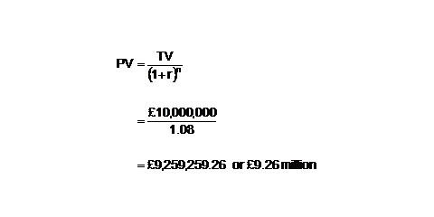
Question 31
[1012750]
The board of an investment trust company are able to:
A
I and III
B
I, II and III
C
I and II
D
II only
The correct answer is: B - I, II and III
Explanation
Split capital means that the company issues two types of share; those entitled to the fund's income and those entitled to its capital gains.Question 32
[1012752]
If the market believes that short term interest rates are going to rise, one would expect the yield curve to be:
A
Upward-sloping
B
Flat
C
Downward sloping
D
'Humped'
The correct answer is: A - Upward-sloping
Explanation
The curve would be downward sloping if short term interest rates are expected to decline.Question 33
[1012753]
A company's dividends are expected to grow by 4%. An investor, who requires a return of 10%, has just received a dividend of 15p. What is the share price?
You should answer this question by typing the correct numbers in pence in the following format without symbols: 000
The correct answer is: 260 - 260
Explanation
Using Gordon's Growth Model; Ex-div share price = Do (1+g) / (r-g), where Do is the current dividend, g is the expected growth rate of the dividend and r is the investor's required rate of return. Applying the numbers from the question: = £0.15 x 1.04 / 0.06 = £2.60 or 260pQuestion 34
[1012754]
What is the tick size of the FTSE 100 future?
A
One point
B
Half point
C
Two points
D
Quarter point
The correct answer is: B - Half point
Explanation
The minimum price movement (or tick) is half an index point. At £10 per index point, the tick value is £5.Question 35
[1012755]
You wish to fix the US $ rate to convert a dollar receipt into sterling in one month. The current £: US $ rate is £1 : $1.4830 and the one month discount is 0.2c - 0.32c. What is the forward rate?
A
£1 : $1.4862
B
£1 : $1.4832
C
£1 : $1.4828
D
£1 : $1.4898
The correct answer is: A - £1 : $1.4862
Explanation
Forward rate = 1.4830 + 0.0032 = 1.4862Question 36
[1012760]
Which of the following 15-year bonds will have the highest modified duration?
A
2.00% Japanese government bond
B
6.50% US bond
C
3.50% Italian bond
D
3.25% German bond
The correct answer is: A - 2.00% Japanese government bond
Explanation
Modified duration is a measure of the bonds risk. The higher the risk, the greater the modified duration. All the bonds in the question have the same redemption date, therefore, the lowest coupon bond, the Japanese Government Bond, will have the highest modified duration.Question 37
[1012761]
Which of the following are characteristics of a preference share?
A
I and III
B
I and II
C
II only
D
I, II, and III
The correct answer is: D - I, II, and III
Explanation
Preference shareholders receive their dividends (which are fixed) before ordinary shareholders. There are some circumstances where preference shareholders may vote at company meetings, but it is not the norm.Question 38
[1012762]
Calculate the value of stocks if the quick ratio is 0.8, the current ratio is 1.5 and the value of current assets is £300,000.
You should answer this question by typing the correct numbers in pounds sterling in the following format without symbols: 000,000
The correct answer is: 140,000 - 140,000
Explanation
Current ratio = Current assets / Current liabilities 1.5 = £300,000 / ? Current liabilities = £200,000 Quick ratio = (Current assets - Stock) / Current liabilities 0.8 = (£300,000 - ?) / £200,000 0.8 x 200,000 = (300,000 - ?) 160,000 = 300,000 - ? ? = 300,000 - 160,000 = 140,000 Stock = £140,000Question 39
[1012766]
Calculate the conversion premium of a bond priced at £108, with a nominal value of £100 that will convert into 40 shares priced at 250p per share.
You should answer this question by typing the correct numbers in percent in the following format without any symbols: 0
The correct answer is: 8 - 8
Explanation
Effective cost per share via the convertible debt is (£108 / 40) £2.70. Additional 20p paid over the current share price. Expressed as a percentage of the current share price (20p / £2.50 x 100%) = 8%.Question 40
[1012767]
Arndale plc shares are currently priced at 40p each after being issued two years ago at 50p. Dividends in the first year were 6p per share and this year, 3p. Calculate the return on Arndale plc's shares.
You should answer this question by typing the correct numbers in percent in the following format: +0 or -0
The correct answer is: -2 - -2
Explanation
The total (holding period) return to a share is over a given period is: -10 +6 +3 = -1 -1/50 = -0.02 or -2%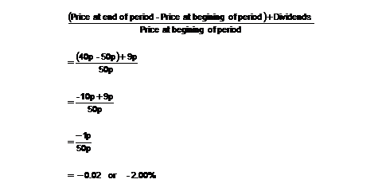
Question 41
[1012772]
If company A is more geared than Company B, which of the following is true?
A
A's earnings will be more sensitive to changes in interest rates than B's
B
A's earnings will be less sensitive to changes in interest rates than B's
C
Company A has less debt relative to equity than Company B
D
Company B has more debt relative to equity than Company A
The correct answer is: A - A's earnings will be more sensitive to changes in interest rates than B's
Explanation
The more debt a company has (the more geared it is), the more sensitive it will be to any changes in interest rates.Question 42
[1012773]
Which of the following is implied by the 'liquidity preference theory' of the yield curve?
A
Maturity is only important for fixed interest stocks
B
Investors want a premium for shorter maturity investments
C
Investors want a premium for longer maturity investments
D
People are indifferent about maturity dates
The correct answer is: C - Investors want a premium for longer maturity investments
Explanation
The liquidity preference theory argues that investors require a higher return for longer dated investments. As a result, investors need to be tempted by higher yields. Consequently, the 'normal' shape of the yield curve should be upward sloping, i.e. lower yields for nearer dated bonds and higher yields for longer dated ones.Question 43
[1012774]
The Jensen measure requires the specification of which of the following?
A
A relevant passive benchmark with the same beta as the managed portfolio
B
A relevant passive benchmark with a different beta as the managed portfolio
C
A relevant passive benchmark with the same standard deviation as the managed portfolio
D
A relevant passive benchmark with a different standard deviation as the managed portfolio
The correct answer is: A - A relevant passive benchmark with the same beta as the managed portfolio
Explanation
The Jensen measure of performance measures the difference between the return a portfolio actually achieved (Rp) and the return predicted by CAPM (Rcapm): Jensen = Rp - Rcapm The CAPM prediction is based on a benchmark portfolio with the same beta as the one being measured. Consequently, the comparison between Rp and Rcapm is valid.Question 44
[1012777]
Which of the following are characteristics of the property market?
A
I and II
B
I and III
C
II and III
D
I, II and III
The correct answer is: C - II and III
Explanation
The property market is tightly controlled by the government e.g. stamp duty / tax regimes etc). It is a decentralised market, i.e. property is not all traded in one place and subject to one set of supply and demand forces. Lastly, when buying a property to rent out, the return is going to be severely restricted by management costs.Question 45
[1012785]
What is the present value of £150,000 received in four years' time at a rate of interest of 8% p.a.?
You should answer this question by typing the correct numbers in pounds sterling in the following format without symbols: 0,000.00
The correct answer is: 110,254.48 - 110,254.48
Explanation
The £150,000 in five years time is the terminal value. The present value may be calculated by using the discounting formula: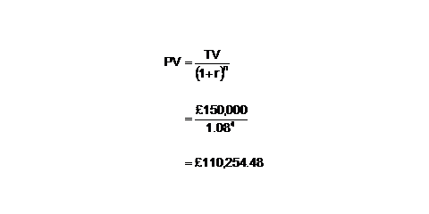
Question 46
[1012787]
If the expected return to a bond portfolio equals 8.5%, the risk-free return is 3%, the duration of the market is seven years, and the market risk premium is 7.7%, what is the duration of the portfolio?
A
6.6 years
B
8.2 years
C
7 years
D
5 years
The correct answer is: D - 5 years
Explanation
Trial and error 3+ ?/7 x 7.7 = 8.5 Just try the different choices in the ? space until the answer is 8.5 Rearrangement 3+ ?/7 x 7.7 = 8.5 8.5 - 3 = ? / 7 x 7.7 8.5 -3 = 5.5 ? / 7 x 7.7 = 5.5 5.5 / 7.7 = ?/7 5.5 / 7.7 = 0.714 ?/7 = 0.714 0.714 x 7 = ? 0.714 x 7 = 5 ?=5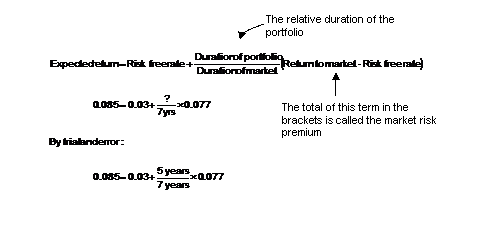
Question 47
[1012791]
What can be associated with a security that has a beta less than one?
A
Yields generally lower returns than a security with a beta of more than one
B
Yields generally higher returns than a security with a beta of more than one
C
Systematic risk is greater if the beta is less than one
D
The unsystematic risk is the same in both securities
The correct answer is: A - Yields generally lower returns than a security with a beta of more than one
Explanation
Beta measures the (systematic) risk of the security RELATIVE to the market as a whole. A beta of less than one indicates that the risk of the security is LESS volatile than the market. A beta of more than one indicates the security is MORE volatile than the market.Question 48
[1012792]
What is normally the maximum investment permitted in a company for an investment trust?
A
3%
B
5%
C
10%
D
15%
The correct answer is: D - 15%
Explanation
An investment trust is not required to be as diversified as a unit trustQuestion 49
[1012794]
The shares of a company are currently at 400p. The date is January 2001. Which of the following call options has the highest time value?
A
April 2001 and strike 380p
B
October 2001 and strike 380p
C
April 2001 and strike 360p
D
October 2001 and strike 360p
The correct answer is: B - October 2001 and strike 380p
Explanation
Options with the longest remaining life (in this question, the Octobers) have the greatest time value. Of these, the option which is closest to being at the money will have greatest time value.Question 50
[1012795]
An option's delta is best described as the ratio between:
A
The price of the option and the price of the underlying instrument
B
The change in the option premium and the change in the price of the underlying instrument
C
The time value and the intrinsic value
D
The option premium and the underlying price
The correct answer is: B - The change in the option premium and the change in the price of the underlying instrument
Explanation
The delta of an option quantifies how far a premium changes given a change in the price of the underlying asset. Note: Delta = Change in premium / Change in underlying.Question 51
[1012799]
Which of the following best describes the quick ratio (acid test)?
A
Debtors + cash + stock / creditors – short term borrowings
B
Debtors + cash / creditors – short term borrowings
C
Debtors + cash / creditors + short term borrowings
D
Debtors + cash + stock / creditors + short term borrowings
The correct answer is: C - Debtors + cash / creditors + short term borrowings
Explanation
The quick ratio excludes stock, because stock cannot be easily converted into cash..Question 52
[1013237]
A project requires an initial outlay of £22,240 today and a further £1,000 in one year's time. Thereafter (i.e. years 2 and 3) it will generate inflows of £20,000 pa for the next two years. What is the internal rate of return of the project?
A
21.00%
B
23.00%
C
25.00%
D
27.00%
The correct answer is: C - 25.00%
Explanation
The internal rate of return is the discount rate that when applied to the cash inflows and outflows calculates the net present value to be zero. Trying the answer 25% (Note: '^' means to the power of). 20,000 / (1.25)^2 + 20,000 / (1.25)^3 - 1000 / (1.25) - 22,240 = 0Question 53
[1015557]
T-bills, issued by the DMO, have all of the following characteristics except:
A
Their main purpose is to help control the money supply
B
They have a life of less than a year
C
They are issued at a discount
D
They pay a fixed gross coupon
The correct answer is: D - They pay a fixed gross coupon
Explanation
T-bills do not pay a coupon, instead they are issued at a discount and redeemed at face value - the difference between them being the interest received.Question 54
[1015791]
Which of the following is NOT a characteristic of a warrant?
A
Warrants are long-dated call options
B
A warrant will be issued to raise finance for the company
C
Warrants can only be issued to existing shareholders
D
Warrants can be traded on the London Stock Exchange
The correct answer is: C - Warrants can only be issued to existing shareholders
Explanation
Warrants do not have to be issued only to existing shareholders although listed companies will generally issue warrants representing no more than 20% of the existing share capital. Therefore 'warrants can only be issued to existing shareholders' is the correct answer. Warrants of listed companies can be traded on the LSE and they function in a similar way to long-dated call options.Question 55
[1017479]
What is the most accurate definition of the economic term 'sustainable development'?
A
Describes a consistent level of government spending on public services in an economy
B
Describes a pattern of economic growth that encourages greater economic benefit from boom economic cycles
C
Describes a consistent level of monetary policy in controlling the economy
D
Describes a pattern of economic growth which is stable over the long term
The correct answer is: D - Describes a pattern of economic growth which is stable over the long term
Explanation
The idea of sustainable growth implies that major fluctuations in the business cycle are avoided, and that output grows on a steady upward trend. Essentially, that a 'boom and bust economy' is avoided.Question 56
[1017584]
Which of the following investments typically has the highest level of gearing?
A
Unit Trusts
B
Life Company Funds
C
OEICs
D
Investment Trusts
The correct answer is: D - Investment Trusts
Explanation
Unit trust and OIECs are restricted in their investment in derivatives and cannot borrow to gear up the fund. Life company funds are liability matching funds and are unlikely to be heavily geared. An investment trust is a company, and like any other company can borrow to gear up the business. There are no definitive guidelines on the amount of gearing an investment trust can engage in.Question 57
[1043814]
An investor could indirectly invest in the property market using which of the following vehicles?
A
I, II, and III
B
I and II
C
None of the above
D
II and III
The correct answer is: B - I and II
Explanation
Investing in freehold and leasehold property would be considered DIRECT investment.Question 58
[1043818]
In a rights issue, which of the following is not true?
A
By underwriting, the underwriter guarantees to purchase any right not taken up
B
They may be offered at a deeply discounted price to avoid the need of underwriting
C
The rights may be sold
D
The existing shareholders must take up the rights
The correct answer is: D - The existing shareholders must take up the rights
Explanation
Question 59
[1043820]
A portfolio contains two shares; A and B with betas of 0.7 and 1.3 respectively. 65% of the portfolio has been invested in A, the rest in B. What is the total beta of the portfolio?
You should answer this question by typing the correct numbers in the following format without symbols: 0.00
The correct answer is: 0.91 - 0.91
Explanation
Given the weightings, the total beta would be calculated as follows: (0.65 x 0.7) + (0.35 x 1.3) = 0.91Question 60
[1043821]
Which of the following BEST describes the process of bond stripping?
A
Zero coupon bonds
B
The bond issuer is separating the obligation of paying the nominal value at redemption from the obligation of paying the coupons
C
Interest payments and the redemption proceeds are separated
D
Separating high duration bonds from low duration bonds in a portfolio
The correct answer is: C - Interest payments and the redemption proceeds are separated
Explanation
STRIPS - Separately Traded Registered Interest (coupons) and Principal (redemption value) Securities.Question 61
[1043826]
The largest class of institutional investor in the UK is?
A
Banks
B
Investment Trust Companies
C
Insurance Companies
D
Pension Funds
The correct answer is: D - Pension Funds
Explanation
In the UK, Pension Funds are the largest class of institutional investor.Question 62
[1043828]
A put option with a strike price of £5 is purchased for £2, when the underlying asset is trading at £6. The maximum loss on this strategy would be?
You should answer this question by typing the correct numbers in the following format without any symbols: 0
The correct answer is: 2 - 2
Explanation
The maximum loss for this holder would be the premium paid, £2.Question 63
[1043830]
Which of the following is not a characteristic of property?
A
High transaction costs
B
Illiquid
C
Indivisible
D
Homogenous
The correct answer is: D - Homogenous
Explanation
In the property market, no two properties are considered exactly alike. This is referred to as being heterogeneous.Question 64
[1043832]
If the underlying share is currently trading at £2.80, what is the intrinsic value of a £3.00 strike call which was bought for a premium of 20p, when the share was trading at £3.15?
You should answer this question by typing the correct numbers in pence in the following format without symbols: 00
The correct answer is: 00 - 00
Explanation
This call option would be classified as Out-of-The-Money (OTM), so has no intrinsic value. The remainder must be Time Value.Question 65
[1043834]
If, in a closed economy, the marginal propensity to save was 0.25 and the government reduces its spending by £20m, we would anticipate?
A
National income to fall by £80m
B
National income to rise by £80m
C
National income to fall by £5m
D
National income to fall by £2.7m
The correct answer is: A - National income to fall by £80m
Explanation
To calculate the above using the simple multiplier - £20 x 1/ 1 - MPC Remember, the Marginal Propensity to Save (MPS) + Marginal Propensity to Consume (MPC) = 1 So, in the above example; £20m x 1/MPS (0.25) £20m x 4 = £80m (fall as government has reduced spending)Question 66
[1043836]
If "small cap" stocks outperform all other stocks, the difference between returns on the FTSE All Share Index and the returns on the FTSE 100 index will be:
A
Undetermined
B
Positive
C
Negative
D
Zero
The correct answer is: A - Undetermined
Explanation
The FTSE All Share Index is composed of the FTSE 100, the FTSE 250 and the small cap stocks. Included in the measure is the FTSE 250. Without the knowledge of how the FTSE 250 perfromed relative the FTSE 100, it is difficult to assess the relative performances.Question 67
[1043837]
A rent prepayment would appear as what on the balance sheet?
A
Intangible non-current asset
B
Tangible non-current asset
C
Investment
D
Current assets
The correct answer is: D - Current assets
Explanation
A rent prepayment would appear under the current assets heading on the balance sheet.Question 68
[1043838]
Which of the following would not cause an increase in a company's capital and reserves?
A
Scrip issue
B
Sale of a fixed asset at a profit
C
Upward revaluation of a property
D
An issue of shares at a price over and above their nominal value
The correct answer is: A - Scrip issue
Explanation
A Scrip/Bonus issue moves capital from the share premium account to the issued capital entry so would not cause an overall increase in the capital and reserves section.Question 69
[1043839]
Which of the following payments is not a revenue expense?
A
Auditor's fees
B
Depreciation of a non-current asset
C
Loan repayment
D
Distribution costs
The correct answer is: C - Loan repayment
Explanation
As the loan is being repaid, we have a reduction is the company's liabilities AND a reduction in the company's assets. It would therefore have no impact on the P&L account for the year.Question 70
[1043840]
A set of equities have the following percentage price changes over the last three years: 19%, 77%, -10%, 18% ,32%, 38%, 42%, 15% and 68%. What is the median price change?
You should answer this question by typing the correct numbers in the following format without any symbols: 00
The correct answer is: 32 - 32
Explanation
Median = 1/2 x (n+1) So, 1/2 x 10 = 5th item. In the example above 32%.Question 71
[1043841]
Which of the following is true of idiosyncratic risk?
A
It involves market forces and may be diversified away
B
It is specific to an investment and may be diversified away
C
It involves market forces and can not be diversified away
D
It is specific to an investment and can not be diversified away
The correct answer is: B - It is specific to an investment and may be diversified away
Explanation
Idiosyncratic risk is also known as specific risk. This risk can be diversified away by choosing negatively correlated investments.Question 72
[1043842]
An investor bought 10,000 shares in Annemann Enterprises at 118p each and received net dividends of 13p and 16p per share at the end of each of the first two years respectively. He then sold the shares at 125p, at the end of the second year. What is the Internal Rate of Return (IRR) on this investment?
A
14.96%
B
16.05%
C
13.48%
D
12.77%
The correct answer is: A - 14.96%
Explanation
Given only four possible answers, this question is best solved by "trial and error" and using the discount model: (13/ (1 + r)) + (16/ (1 + r) ^ 2) + (125/ (1+ r) ^ 2) = 118 Therefore (13/ 1.1496) + (16/1.1496^2) + (125/ 1.1496^2) = 118Question 73
[1043843]
Which of the following terms would best describe bond credit ratings?
A
Ordinal data
B
Categorical data
C
Discrete data
D
Continuous data
The correct answer is: A - Ordinal data
Explanation
Bond credit ratings represent rankings, i.e. Ordinal data.Question 74
[1043844]
A bond has a modified duration of 2.68% and a yield of 5%. What is its Macauley duration?
You should answer this question by typing the correct numbers in yesrs in the following format without any symbols: 0.00
The correct answer is: 2.81 - 2.81
Explanation
Modified duration = Macaulay Duration/(1+ Yield) Therefore Macaulay Duration = Modified duration x (1 + Yield)Question 75
[1043845]
Goods A and B are considered to be substitutes. If the price of B falls, what is the effect on the demand for good A?
A
The demand falls and supply curve remains unchanged
B
The demand falls and the supply curve shifts
C
The demand rises and the supply curve remains unchanged
D
Unchanged
The correct answer is: A - The demand falls and supply curve remains unchanged
Explanation
If the price of B fell, given the shape of the demand curve, the demand for B would rise. As the two goods are substitutes, as demand for B rises the demand for A would fall.Question 76
[1048112]
All of the following would be considered explicit costs of trading, EXCEPT:
A
Broker's commissions
B
Stamp duty reserve tax
C
PTM levy
D
Opportunity cost
The correct answer is: D - Opportunity cost
Explanation
Opportunity cost is the cost of not taking an investment opportunity, or the cost as a result of bad timing.Question 77
[1048117]
The semi-strong form of efficient markets hypothesis (EMH) suggests which of the following information is likely to be reflected in the market prices?
A
I only
B
I and II
C
I, II and III
D
I, II, III and IV
The correct answer is: B - I and II
Explanation
The semi-strong form of EMH suggests that market prices reflect all historic and current public information.Question 78
[1048132]
The Merton model proposes which of the following treatments of equity valuation?
A
Shares should be valued at net asset value per share
B
Shares should be valued by discounting the dividend cashflows at a discount rate based on the cost of capital
C
Shares should be valued as a call option on the company's assets
D
Shares should be valued in reference to its risk relative to the market risk
The correct answer is: C - Shares should be valued as a call option on the company's assets
Explanation
With a call option the investor pays the market price for the investment in order to receive unlimited potential gains and a loss limited to his initial investment. So it is with a share. The maximum loss is the initial investment and the maximum potential gain is unlimited.Question 79
[1048136]
Which of the following statements are true with regard to financial market indices?
A
Neither stock indices nor bond indices are typically total return indices
B
Stock indices typically represent capital returns only, whereas bond indices typically represent total returns
C
Stock indices typically represent total returns, whereas bond indices typically represent capital returns only
D
Both stock indices and bond indices are typically total return indices
The correct answer is: B - Stock indices typically represent capital returns only, whereas bond indices typically represent total returns
Explanation
Stock indices (such as the FTSE 100 Share Index) capture capital returns only, i.e. the dividends paid to investors from the stocks constituting the index are ignored in their calculation. By contrast, bond indices are normally calculated as total return indices, i.e. they capture both the movement in the bond's price and the coupon income received.Question 80
[1048137]
Which of the following is NOT a reason for a company to buy-back some of its ordinary shares?
A
To reduce the number of ordinary shares in issue
B
To return excess cash flow to shareholders
C
To reduce the value of the company's earnings per share ratio
D
To rationalise the capital structure of the company
The correct answer is: C - To reduce the value of the company's earnings per share ratio
Explanation
A successful share buy-back operation will result in the value of the company's earnings per share ratio increasing, not reducing.Question 81
[1048138]
Which of the following factors is NOT considered important in helping to accurately rate the creditworthiness of a bond?
A
The types of stresses the issuer of a bond should be able to withstand without defaulting on the bond's repayments
B
The financial stability of the holder of the bond
C
The payment priority of the bond in the event of liquidation
D
The financial stability of the issuer of the bond
The correct answer is: B - The financial stability of the holder of the bond
Explanation
The financial stability of the holder of the bond is irrelevant to the creditworthiness of the bond itself.Question 82
[1049626]
Martin is a financial adviser and is considering four different companies' shares to recommend to his client, Mr Fletcher. These are as follows:
If Mr Fletcher wishes to construct a portfolio that best tracks the FTSE100 index, what weightings would you recommend?
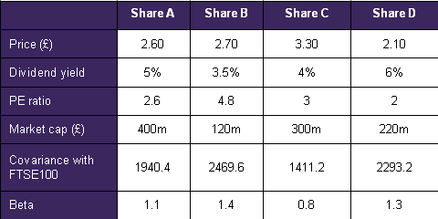
A
30% in A, 40% in C and 30% in D
B
25% in A, 25% in B and 50% in C
C
10% in B, 60% in C and 30% in D
D
Invest only in A
The correct answer is: C - 10% in B, 60% in C and 30% in D
Explanation
The most straightforward way to assess the weighting is to calculate a portfolio beta for the portfolios suggested, and the portfolio with the beta closest to 1 is the answer. Portfolio 3 would track the index best.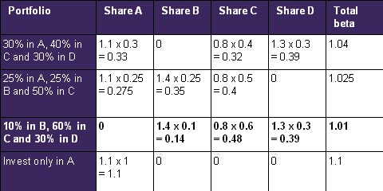
Question 83
[1049627]
Martin is a financial adviser and is considering four different companies' shares to recommend to his client, Mr Fletcher. These are as follows:
Calculate the number of shares in issue for company D.
You should give your answer exactly in following form without symbols: 000,000,000
The correct answer is: 104,761,905 - 104,761,905
Explanation
The number of shares in issue can be calculated by dividing the share price into the market capitalisation. 220m/2.10 = 104,761,905 sharesQuestion 84
[1049628]
Martin is a financial adviser and is considering four different companies' shares to recommend to his client, Mr Fletcher. These are as follows:
Calculate the earnings per share (in pence) for company B.
You should give your answer exactly in following form without symbols: 00
The correct answer is: 56 - 56
Explanation
Earning per share can be assessed from the PE ratio.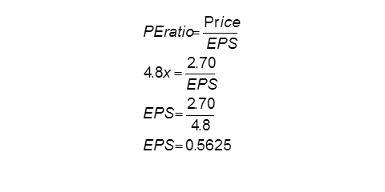
Question 85
[1049629]
Martin is a financial adviser and is considering four different companies' shares to recommend to his client, Mr Fletcher. These are as follows:
Calculate the standard deviation of the return on the market.
A
35
B
42
C
49
D
55
The correct answer is: B - 42
Explanation
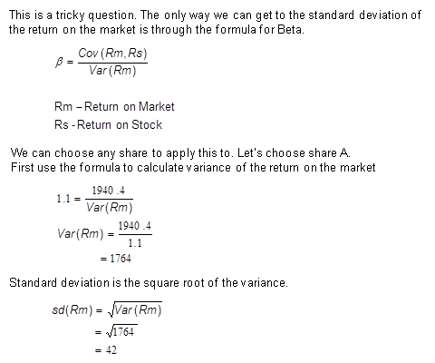
Question 86
[1049630]
Martin is a financial adviser and is considering four different companies' shares to recommend to his client, Mr Fletcher. These are as follows:
Which of the following combinations would be best for a growth portfolio?
A
Shares A and B
B
Shares B and C
C
Shares A and D
D
Shares C and D
The correct answer is: B - Shares B and C
Explanation
Those looking for growth in their portfolios would typically look for high PE ratios.Question 87
[1049631]
Martin is a financial adviser and is considering four different companies' shares to recommend to his client, Mr Fletcher. These are as follows:
Which of the stocks is likely to be most volatile?
A
Share A
B
Share B
C
Share C
D
Share D
The correct answer is: B - Share B
Explanation
The high covariance and beta of the stock reflect that it is more volatile than the other shares.Question 88
[1049632]
QWE Fund invests in mid-cap UK shares. It has been running for three years now. The value of the fund at inception and then at the end of each year is shown below:
Year 0 (inception): £110m
End of year 1: £128.5m
End of year 2: £136.8m
End of year 3: £122.5m
The only additional funds totalled £12m and were added halfway through the first year. The only withdrawal from the fund was made at the end of month 30 totalling £8m when the fund was worth £138.5m.
On of the strong performers in the fund was Allmas plc. Which was bought for 250p at the start of the fund and was worth 335p at the end of the three year period, having also paid out dividends totalling 28p over the same period
From the end of year 1 to the end of year 2 the beta of the fund was 1.2, the standard deviation of the market was 15% and the risk free rate was 4%.
Which of the following indices would be a suitable benchmark?
A
FTSE 250
B
Dow Jones Industrial average
C
FTSE Fledgling
D
S&P 400
The correct answer is: A - FTSE 250
Explanation
The fund contains UK mid-cap shares. The FTSE 250 best represents this range.Question 89
[1049633]
QWE Fund invests in mid-cap UK shares. It has been running for three years now. The value of the fund at inception and then at the end of each year is shown below:
Year 0 (inception): £110m
End of year 1: £128.5m
End of year 2: £136.8m
End of year 3: £122.5m
The only additional funds totalled £12m and were added halfway through the first year. The only withdrawal from the fund was made at the end of month 30 totalling £8m when the fund was worth £138.5m.
On of the strong performers in the fund was Allmas plc. Which was bought for 250p at the start of the fund and was worth 335p at the end of the three year period, having also paid out dividends totalling 28p over the same period
From the end of year 1 to the end of year 2 the beta of the fund was 1.2, the standard deviation of the market was 15% and the risk free rate was 4%.
Calculate the total return on the shares in Allmas plc. Give you response in percent to the first decimal place.
You should give your answer exactly in following form without symbols: 00.0
The correct answer is: 45.2 - 45.2
Explanation
Total return is calculated as follows: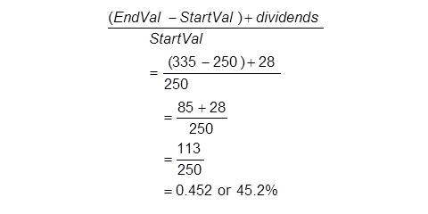
Question 90
[1049634]
QWE Fund invests in mid-cap UK shares. It has been running for three years now. The value of the fund at inception and then at the end of each year is shown below:
Year 0 (inception): £110m
End of year 1: £128.5m
End of year 2: £136.8m
End of year 3: £122.5m
The only additional funds totalled £12m and were added halfway through the first year. The only withdrawal from the fund was made at the end of month 30 totalling £8m when the fund was worth £138.5m.
On of the strong performers in the fund was Allmas plc. Which was bought for 250p at the start of the fund and was worth 335p at the end of the three year period, having also paid out dividends totalling 28p over the same period
From the end of year 1 to the end of year 2 the beta of the fund was 1.2, the standard deviation of the market was 15% and the risk free rate was 4%.
Calculate QWE's money weighted rate of return in year 1.
A
5.23%
B
5.61%
C
5.97%
D
6.18%
The correct answer is: B - 5.61%
Explanation
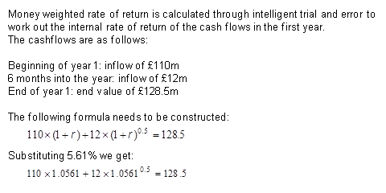
Question 91
[1049635]
QWE Fund invests in mid-cap UK shares. It has been running for three years now. The value of the fund at inception and then at the end of each year is shown below:
Year 0 (inception): £110m
End of year 1: £128.5m
End of year 2: £136.8m
End of year 3: £122.5m
The only additional funds totalled £12m and were added halfway through the first year. The only withdrawal from the fund was made at the end of month 30 totalling £8m when the fund was worth £138.5m.
On of the strong performers in the fund was Allmas plc. Which was bought for 250p at the start of the fund and was worth 335p at the end of the three year period, having also paid out dividends totalling 28p over the same period
From the end of year 1 to the end of year 2 the beta of the fund was 1.2, the standard deviation of the market was 15% and the risk free rate was 4%.
Calculate the Treynor measure for the portfolio for the period between the end of year 1 to the end of year 2, using a time weighted rate of return for the portfolio.
A
2.05
B
3.20
C
6.46
D
16.40
The correct answer is: A - 2.05
Explanation
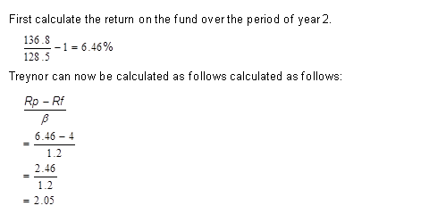
Question 92
[1049636]
QWE Fund invests in mid-cap UK shares. It has been running for three years now. The value of the fund at inception and then at the end of each year is shown below:
Year 0 (inception): £110m
End of year 1: £128.5m
End of year 2: £136.8m
End of year 3: £122.5m
The only additional funds totalled £12m and were added halfway through the first year. The only withdrawal from the fund was made at the end of month 30 totalling £8m when the fund was worth £138.5m.
On of the strong performers in the fund was Allmas plc. Which was bought for 250p at the start of the fund and was worth 335p at the end of the three year period, having also paid out dividends totalling 28p over the same period
From the end of year 1 to the end of year 2 the beta of the fund was 1.2, the standard deviation of the market was 15% and the risk free rate was 4%.
Calculate the time weighted rate of return for the final year of the fund. Answer as a percentage rounded to the second decimal place.
You should give your answer exactly in following form without symbols: 0.00
The correct answer is: -4.96 - -4.96
Explanation
Time weighted rate of return can be calculated as follows: 136.8 = start value at yr 3 138.5 = value at month 30 (i.e. halfway through year 3) before withdrawal 130.5 = value at month 30 (i.e. halfway through year 3) after withdrawal 122.5 = end value at year 3.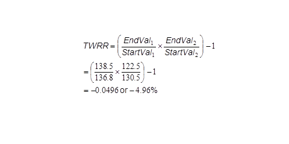
Question 93
[1049637]
QWE Fund invests in mid-cap UK shares. It has been running for three years now. The value of the fund at inception and then at the end of each year is shown below:
Year 0 (inception): £110m
End of year 1: £128.5m
End of year 2: £136.8m
End of year 3: £122.5m
The only additional funds totalled £12m and were added halfway through the first year. The only withdrawal from the fund was made at the end of month 30 totalling £8m when the fund was worth £138.5m.
On of the strong performers in the fund was Allmas plc. Which was bought for 250p at the start of the fund and was worth 335p at the end of the three year period, having also paid out dividends totalling 28p over the same period
From the end of year 1 to the end of year 2 the beta of the fund was 1.2, the standard deviation of the market was 15% and the risk free rate was 4%.
Calculate the covariance of the return on the market and the return of fund for year two combined.
You should give your answer exactly in following form without symbols: 000
The correct answer is: 270 - 270
Explanation
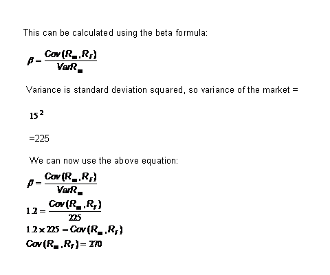
Question 94
[1066176]
You are considering the policy options that an emerging market monetary authority may take in order to limit the growth of the money supply and reduce inflationary pressures.
Which of the following is NOT a Monetary Policy tool commonly used by Central Banks?
A
Setting official rates
B
Setting effective inter bank (overnight) rates
C
Open Market Operations
D
Setting Reserve Requirements
The correct answer is: B - Setting effective inter bank (overnight) rates
Explanation
Central banks such as the Fed, ECB and BoE will 'manage' o/n rates IF the money markets have liquidity levels which are not consistent with official rates, but they do not SET inter bank rates.Question 95
[1066818]
Which of the following is not a reason for using indirect investments?
A
Lower diversity
B
A preference for shorter term assets
C
Investors prefer more liquid assets
D
Economies of scale
The correct answer is: A - Lower diversity
Explanation
Indirect investments often offer greater diversification.Question 96
[1066828]
Which of the following is a non standardised contract where both parties have an obligation to settle in cash on a series of future dates?
A
Future
B
Swap
C
Forward
D
Option
The correct answer is: B - Swap
Explanation
Futures are standardised contracts whereas forwards, swaps and some options are non standard. Forwards settle on a single date whereas swaps settle on a series of dates. With an option only one of the parties has an obligation to settle the contract.Question 97
[1066855]
Which of the following statements is not a description of dominance?
A
A has an SD of 5, B has an SD of 5, A has a return of 7 and B has a return of 6
B
A has a beta of 0.6, B has a beta of 1, A has a return of 10 and B has a return of 10
C
A has an SD of 7, B has a beta of 1.5, A has a return of 9 and B has a return of 4
D
A has a Sharpe measure of 3 and B has a Sharpe measure of 2
The correct answer is: C - A has an SD of 7, B has a beta of 1.5, A has a return of 9 and B has a return of 4
Explanation
A portfolio is said to dominate another if it gives a greater return per unit of risk, i.e. it has a higher risk adjusted return. These factors can be measured using risk adjusted ratios such as Sharpe or Treynor. In the example which provides standard deviation for A and Beta for B we cannot directly compare the risk adjusted returns.Question 98
[1066859]
Which of the following describes contingent immunisation?
A
It a strategy performed by passive managers. The manager starts off with significant discretion as to duration and yield of their positions and the performance is regularly reviewed
B
It a strategy employed by active managers. A bond portfolio with the same duration as the liability is selected and this is rebalanced as necessary
C
It a strategy employed by active managers. If the portfolio performs poorly, the manager will move to a portfolio that matches the duration and return requirements of the liabilities
D
It a strategy performed by passive managers. It involves the purchase of bonds by investing institutions, such that the cash received from the coupons and principal at each period exactly matches each cash outflow
The correct answer is: C - It a strategy employed by active managers. If the portfolio performs poorly, the manager will move to a portfolio that matches the duration and return requirements of the liabilities
Explanation
Contingent immunisation is a strategy that may be employed by active managers. The manager starts off with significant discretion as to duration and yield of their positions. The performance is regularly reviewed, and as long as the positions perform well relative to the associated liability, then this discretion may continue. If the portfolio performs poorly, the manager will move to a portfolio that matches (immunises) the duration and return requirements of the liabilities.Question 99
[1066875]
Which of these are components in the total return of a bond?
A
Yield to maturity effect, inflation effect, section effect, required
B
Yield to maturity effect, interest rate effect, sector/quality effect, residual
C
Yield to maturity effect, inflation rate effect, sector/quality effect, residual
D
Yield to maturity effect, interest rate effect, sector/quality effect, required
The correct answer is: B - Yield to maturity effect, interest rate effect, sector/quality effect, residual
Explanation
We can decompose bond returns into maturity, sector and credit quality effects. The total return for a bond during a period of time is composed of a known income effect, due to normal yield to maturity factors, and an unknown price effect, due to an interest rate effect, a sector/quality effect and a residual effect. The income effect is the return an investor would receive if the yield curve was unchanged, the interest rate effect measures what happens if the Treasury yield curve shifts, while the sector/quality effect reflects the changing yield as sector (e.g. corporate) yields or credit quality (e.g. Aaa) changes.Question 100
[1066889]
The price of houses has risen 10% and the supply of houses has risen by 2%. Calculate the elasticity of supply and whether the relationship is elastic:
A
0.2 elastic
B
5 inelastic
C
5 elastic
D
0.2 inelastic
The correct answer is: D - 0.2 inelastic
Explanation
Elasticity is calculated as percentage change in quantity / percentage change in price 2% / 10% = 0.2Question 101
[1066904]
Secondary data includes:
A
A scientist performing laboratory experiments
B
Information from bodies formed specifically to gather and distribute data
C
A market research firm commissioned to gather information
D
The collection or generation of data with a specific project or task in mind
The correct answer is: B - Information from bodies formed specifically to gather and distribute data
Explanation
Secondary data is the use of information that has previously been collected for another purpose.Question 102
[1066928]
Which of the following has a legal bearing on how UK companies prepare their accounts?
A
Listing requirements
B
Companies Act(s)
C
International Financial Reporting Standards
D
20-F return to the SEC
The correct answer is: B - Companies Act(s)
Explanation
Whilst all of these may have bearing on what information is published and when, the legal requirements for annual financial reporting by companies are set out in the various Companies Acts.Question 103
[1066954]
Trustmee plc is raising additional capital by means of a 1 for 5 rights issue. The shares are currently trading for £2.45 and the subscription price for the offering is £2.15. What will be the nil-paid price?
A
5p
B
25p
C
30p
D
49p
The correct answer is: B - 25p
Explanation
Theoretical Ex-Rights Price (TERP) = (5 x £2.45) + (1 x £2.15) divided by 6 = £14.40/6 = £2.4 Nil- paid price = TERP - subscription price = £2.40 - £2.15 = 25pQuestion 104
[1066997]
Which of the following is not a long-term socio-economic trend in the UK?
A
Growth in public expenditure as a percentage of GDP
B
Difficulty in not breaching the EU deficit to GDP ratio
C
A population ageing quicker than all other EU countries
D
Concern over the fiscal health of the economy
The correct answer is: C - A population ageing quicker than all other EU countries
Explanation
Although there is an ageing population UK, this is not developing as quickly as some of our European neighbours.Question 105
[1067021]
Which of the following is least likely to cause a shift in the demand schedule for petrol?
A
A change in the price of petrol
B
A change in the price of cars
C
A change in the income level of consumers
D
A change in the general opinion on fossil fuels
The correct answer is: A - A change in the price of petrol